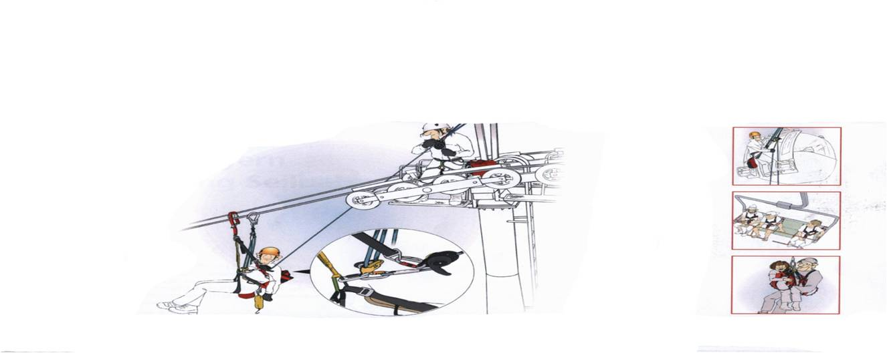
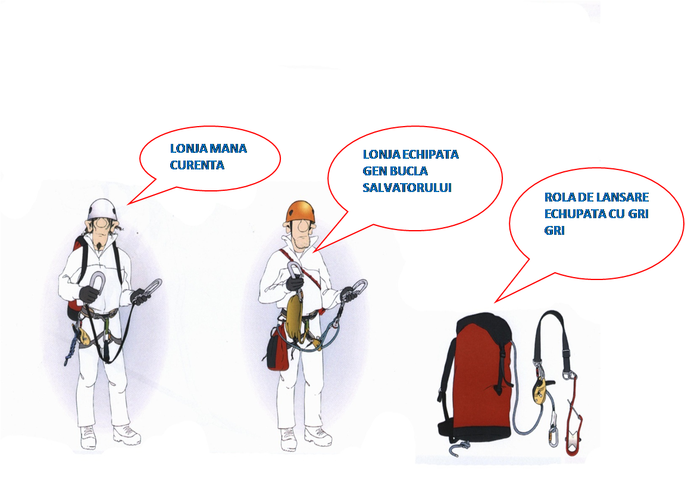
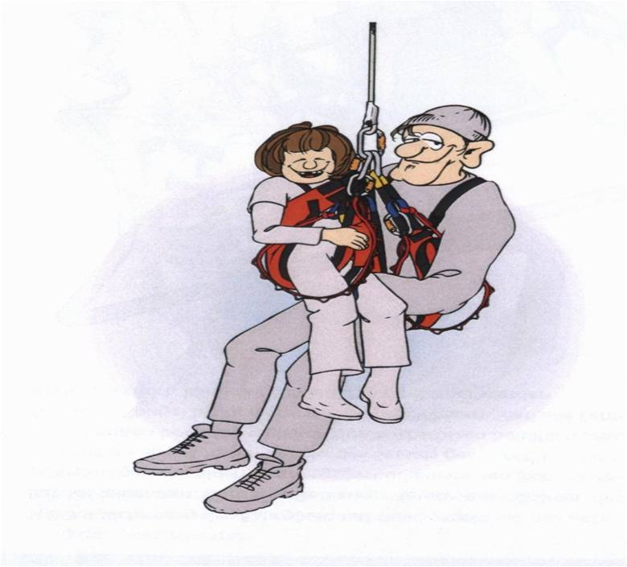

ASOCIATIA NATIONALA A SALVATORILOR MONTANI DIN ROMANIA
PROCEDURI ȘI TEHNICI DE BAZĂ ÎN SALVAREA MONTANĂ
METODOLOGIE DE INTERVENTIE SI EVACUARE DE PE INSTALATIILE DE TRANSPORT PE CABLU

ECHIPAMENT DE PROTECTIA MUNCI INDIVIDUAL/SALVATOR

ECHIPAMENT TEHNIC DE INTERVENTIE SALVARE DE PE INSTALATIILE DE
TRANSPORT PE CABLU

ECHIPAMENT DE SALVARE/ECHIPA

URCAREA PE MANA CURENTA CU LONJA DUBLA SI CU SISTEMUL 3/3

ECHIPAREA SALVATORULUI INAINTEA LANSARI

PROCEDEUL DE IESIRE PE VERTICALA SI LANSAREA SALVATORULUI

LANSAREA SALVATORULUI

INTRAREA LA CABINA

POZITIA SCHIURILOR IN LANSARE
FIXAREA SI PRELUAREA TURISTULUI DE PE INSTALATIE IN VEDEREA EVACUARI

LANSAREA COPIILOR SUB 14 ANI

DEPASIREA GHEAREI DE ANCORAJ AL CABINEI SAU TELESCAUNULUI


PLAN EVACUARE INSTALATII TRANSPORT PE CABLU
CURICULA INTERVENTIE SALVAMONT
1. PE TOATE INSTALATIILE DE TRANSPORT PE CABLU EXISTA EVENIMENTE NEPREVAZUTE.IN CAZUL UNOR ASEMENEA EVENIMENTE VA FI INFORMAT SI SOLICITAT ECHIPA CARE DESERVESTE ZONA PRIN DISPECERATUL NATIONAL 0SALVAMONT(0725856668)
2. SE IMPUNE CA SEFUL INSTALATIEI SA DESEMNEZE SI SA PREGATEASCA DIN CADRUL PERSONALULUI PROPRIU CONTRACTANT CEL PUTIN O ECHIPA DE INTERVENTIE EVACUARE CARE SA INTERVINA PROMT PANA LA VENIREA ECHIPEI SALVAMONT.SI SA PREGATEASCA ECHIPAMENTUL DE INTERVENTIE PANA LA SOSIREA SALVATORILOR ATESTATI
3. PERSONALUL DIN CADRUL ECHIPEI SALVAMONT CARE VA PARTICIPA LA ACTIUNEA DE SALVARE EVACUARE VA FI CU ATESTAT DE SALVATOR MONTAN VALID.
4. SEFUL ECHIPEI SALVAMONT VA INPARTI NUMARUL DE SCAUNE PE NUMARUL DE ECHIPE CARE INTERVIN SI VA INSTRUI SALVATORI IN VEDEREA RESPECTARI PROCEDEELOR ANEXATE DE SALVARE EVACUARE DIN TELESCAUN SAU TELEGONDOLA
5. SALVATORUL MONTANI CARE VOR EFECTUA SALVAREA SI EVACUAREA DIN INSTALATIE VOR AVEA O EXPERIENTA DE MINIM 3 ANI DE LA DATA ATESTARI IN VEDEREA DESFASURARI ACTIVITATI DE SALVARE DIN TELESCAUN SAU TELEGONDOLA CAT SI CUNOSTINTE DE BLS,IN VEDEREA RECUNOASTERI MOMENTULUIL CAND UN AJUTOR MEDICAL DE SPECIALITATE ESTE NECESAR. EI VOR PARTICIPA REGULAT LA SESIUNI DE INSTRUIRE SI ANTRENAMENTE PENTRU ACTIUNI DE SALVARE.PE PARCURSUL ACESTOR ACTIUNI DE INSTRUIRE VOR FI REEVALUATI DIN 3 IN 3 ANI DE ANSMR CONFORM HG 77/2003.
6. SE VA FOLOSI NUMAI ECHIPAMENT DE SALVARE OMOLOGAT SI ADEGVAT SISTEMULUI DE SALVARE RECOMANDAT DE FABRICANTUL INSTALATIEI SI IN CONFORMITATE CU RECOMANDARILE ANSMR
LUAT LA CUNOSTIINTA SEF INSTALATIE TRANSPORT PE CABLU
…………………………………………………………………….
SEF.SERVICIU PUBLIC SALVAMON …………………………………………………………………….
DATE TEHNICE TELESCAUN
SECTIUNEA LONGITUDINALA A INSTALATIE ANEXA 1
ALTITUDINE PUNCT PLECARE .......................
ALTITUDINE PUNCT DEBARCARE ........................
DIF DE NIVEL INTRE STATIA DE ACTIONARE SI INTOARCERE....................
LUNGIME INSTALATIE DE TRANSPORT ….......................
NUMAR DE PILONI..............
NUMAR DE SCAUNE URCARE .............COBORARE ..........
INALTIMEA MINIMA SI MAXIMA FATA DE SOL A SCAUNULUI
MINIMA ................
MAXIMA ..................
PROCES VERBA
INCHEIAT AZI ………………INTRE ADMINISTRATORUL INSTALATIEI DE TRANSPORT PE CABLU SI SERVICIUL PUBLIC SALVAMONT IN VEDEREA COLABORARI IN CAZ DE INTERVENTIE EVACUARE PE MIJLOCUL DE TRANSPORT PE CABLU (TELESCAUN)SUREANU
1 ADMINISTRATORUL ARE OBLIGATIA CONFORM CURICULEI DI PLAN ANEXA 1
2.SALVAMONTUL ARE OBLIGATIA CONFOR CURICULEI ANEXA 1…….ETC